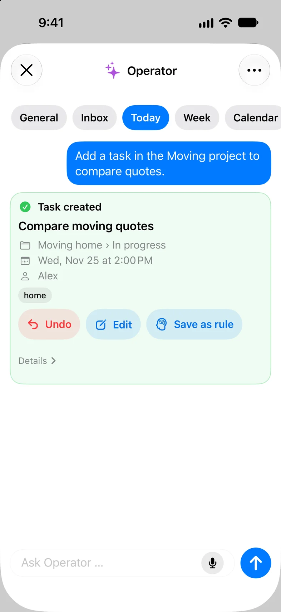

Give Operator a task of its own
Say “Pick up moving boxes by tomorrow, 30 minutes” in Quick Capture. M-Projekt automatically recognizes the deadline and duration. You can ask Operator to create the task and file it in a project.
- Create tasks, make changes, and file tasks in projects
- Daily briefings and planning suggestions
- Apple Intelligence on device or via Private Cloud Compute, with an optional bring-your-own API key
